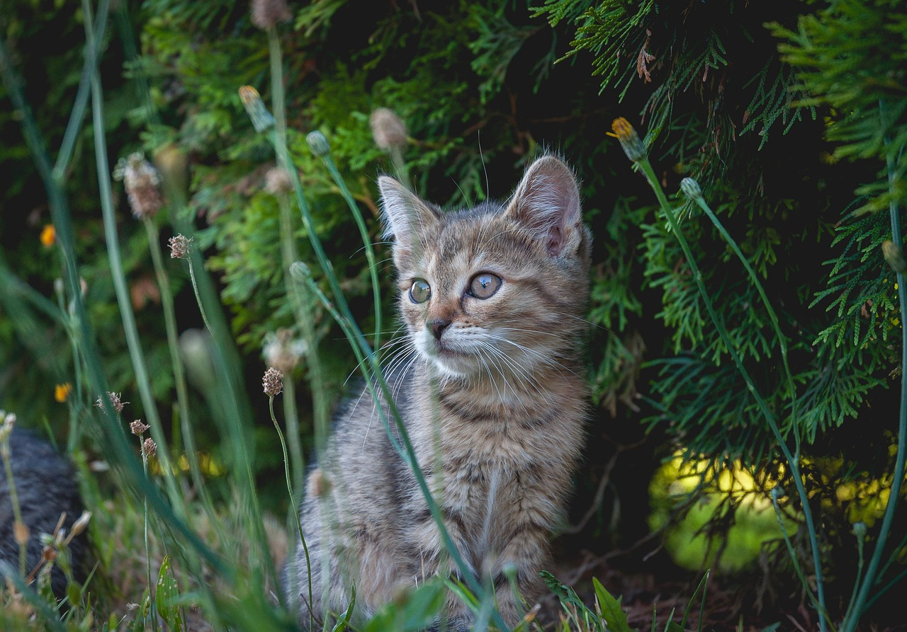
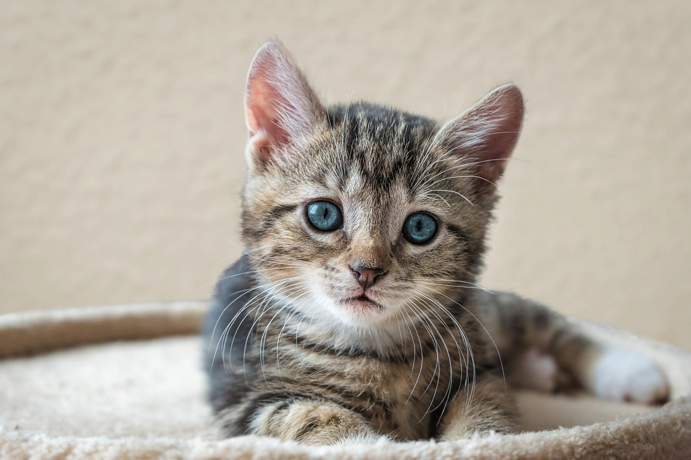
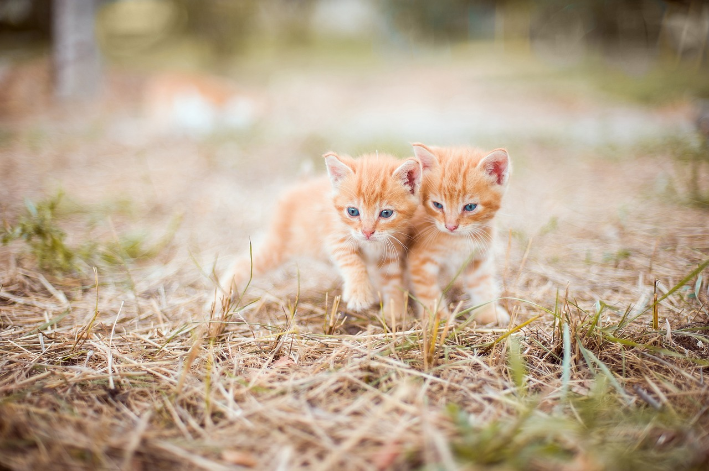

Cats are believed to be the only mammals who don't taste sweetness. Cats are nearsighted, but their peripheral vision
and night vision are much better than that of humans. Cats are supposed to have 18 toes (five toes on each front paw;
four toes on each back paw). Cats can jump up to six times their length.Cats conserve energy by sleeping for an average of 13 to14 hours a day. Cats have flexible bodies and teeth adapted for
hunting small animals such as mice and rats. A group of cats is called a clowder, a male cat is called a tom, a female
cat is called a molly or queen while young cats are called kittens.
General ways to take care of cats
First, feed your cat food that is high in protein and low in carbohydrates. This will help keep them healthy and active.
Second, give them fresh water and occasional litter changes. Finally, keep an eye on their behavior and provide enough
scratching posts and toys for them to enjoyCats require taurine, an essential amino acid, for heart and eye health. The food you choose should be balanced for the
life stage of your cat or kitten. Properly balanced foods will contain taurine.
You will need to provide fresh, clean water at all times, and wash and refill your cat’s water bowls daily.
Treats should be no more than 5-10% of the diet.
Many people feed baby food to a cat or kitten who is refusing food or not feeling well Please read labels carefully: If
the baby food contains onion or garlic powder, your pet could be poisoned.
Take your pet to your veterinarian if signs of anorexia, diarrhea, vomiting or lethargy continue for more than two days.

A cute cat

european shorthair cat

kittens